Over the course of 7 weeks, I created a web app called “Grow” that is designed to help users keep track of the days left before they water their plant.
Overview
This project is for my Interactive App 1 course where I was assigned to design and develop a good user experience for a mobile web app. I was motivated to create my “Grow” app with the hope to prevent another college student from letting their plants die…including me. This app is built with HTML, CSS, and JavaScript, and utilizes the local storage to store user inputted data.
Background
Why this Idea?
Ever since the pandemic started, I have grown my obsession for plants and now own 5 of them in my room; Ella, Coco, Eduard, Soju, and Soju Jr. Something about the idea of witnessing a living thing grow as time passes appealed to me as a great personal experience – perhaps it’s the work of the biophilia effect, or maybe it’s how it serves as a sign of hope for me during this epidemic season. Either way, I hope this can encourage people to care for their plants more.
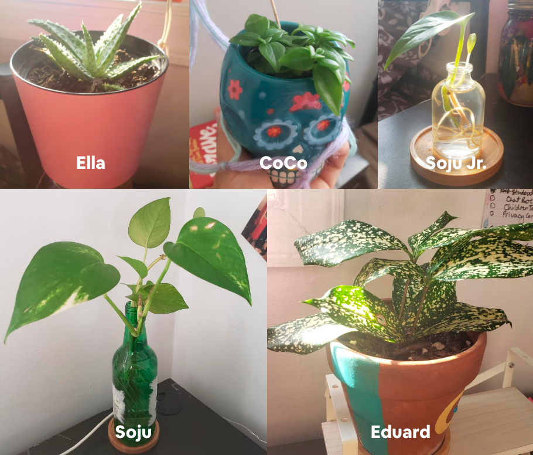
Target Audience:College Females
The Problem: Owning a succulent plant is such an “aesthetic” and “Pinterest” thing for us college girls, but within months, they die. Why?
Lack of plant care knowledge
Busy Lifestyle
Solution: An app where you can keep track of how many days left before you water your succulent plant. Users can select what their succulent type is, and then input the date they last watered the plant. Once they enter the date, it will calculate how many days left before you water your plant.
Goal: code the main functionality of the app successfully by the end of this course
Entering the date and storing it to local storage
Calculating the days left to water
Removing the days left
Timeline: 7 weeks
DESIGN DECISION
Process and Insights
App’s Aesthetic + Style Guide
I always start with the colors as they are a powerful mood setter for a product’s image. On the right are different color themes I found through exploring on color.adobe.com, which inspired my finalized color theme that reflected the feeling of nature and home I wanted to portray.
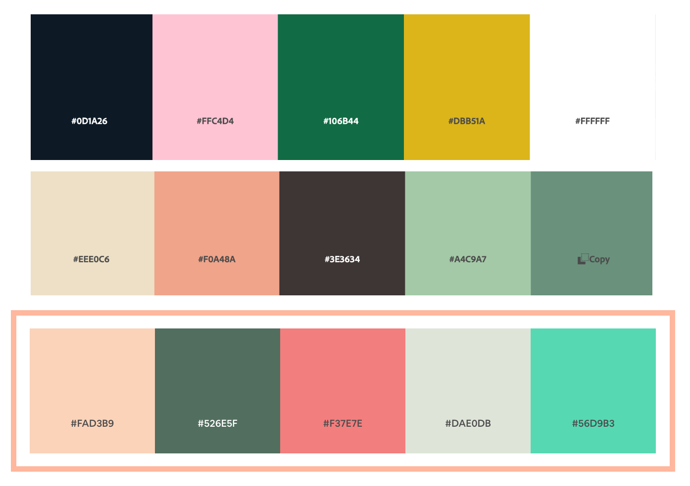
The top two color themes inspired my final color theme.
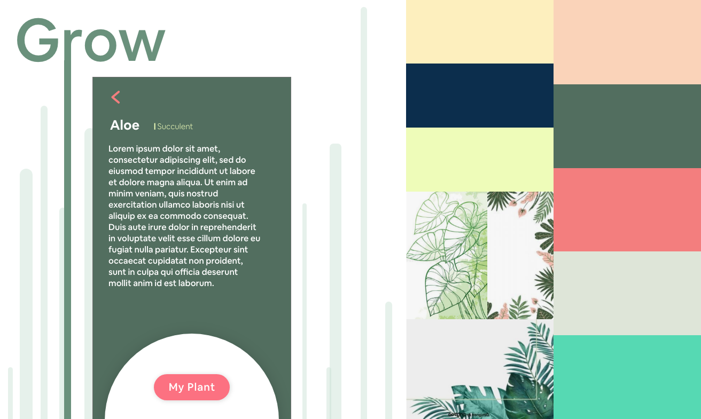
"Grow"'s Style Guide
This style guide is where I established the font and color chosen, how the hierarchy of text should be displayed, and what a call-to-action button should look like. The images of the leaves illustration portrays the style and color (pink and green) I would like to pursue.
Logo
My logo is based off my aloe plant "Ella" shown before. I first did an observational drawing of her with pencil and pen to understand the overall shape and texture she displays. Then I began to simplify her shapes through sketches that will be used for the logo. As this is for the icon design in the homepage, I made sure the lines weren't too thin so they dissappear, but also detailed enough so the shape can be perceived as an aloe plant.
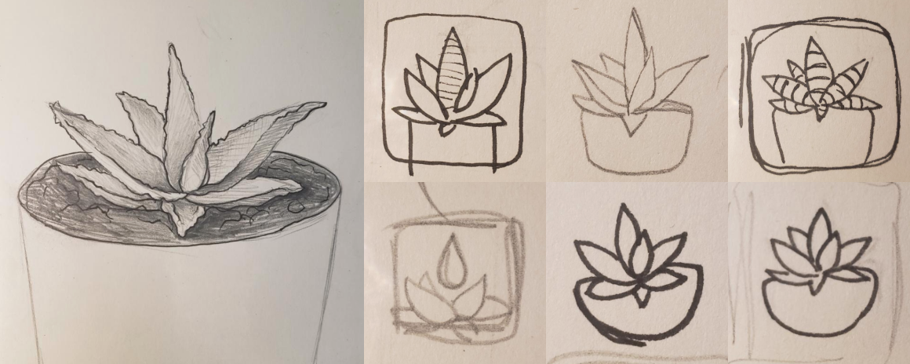
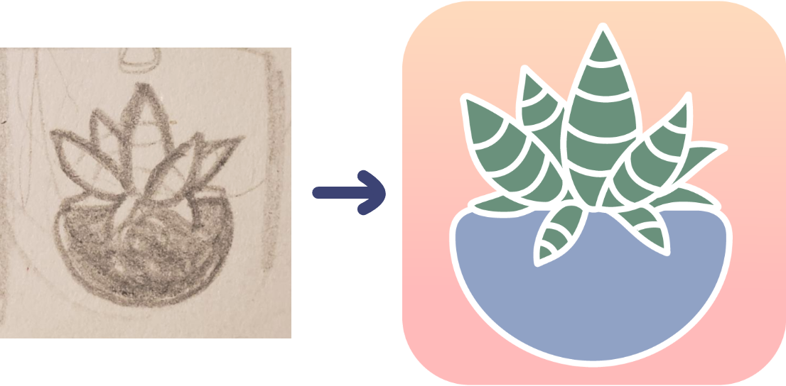
Process journey of designing final logo
Deploying the Logo Icon
To specify the icon for the web app browser, within the head tag I added a link tag :
< link rel="apple-touch-icon" href="img/apple-touch-icon.png" >
And to specify multiple icons for different device resolutions, I added a “sizes” attribute to each link elements as followed:
< link rel="apple-touch-icon" sizes="180x180" href="img/grow_logo_180x180.png" >
< link rel="apple-touch-icon" sizes="114x114" href="img/grow_logo_114x114.png" >
< link rel="apple-touch-icon" sizes="57x57" href="img/grow_logo_57x57.png" >
This way, when someone adds my webpage to their mobile homescreen, this icon is used.
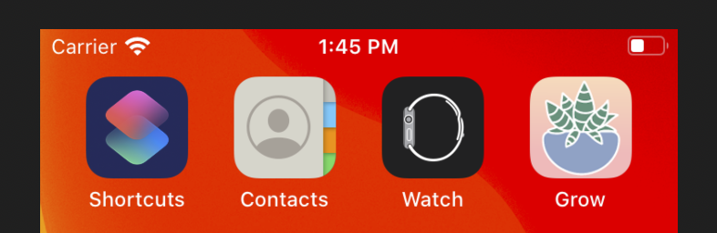
Logo as seen on the mobile homepage.
Wireframe
I wanted my UI to overall embody a natural look with organic elements and predominantly with green and its complementary counter part, pink colors.
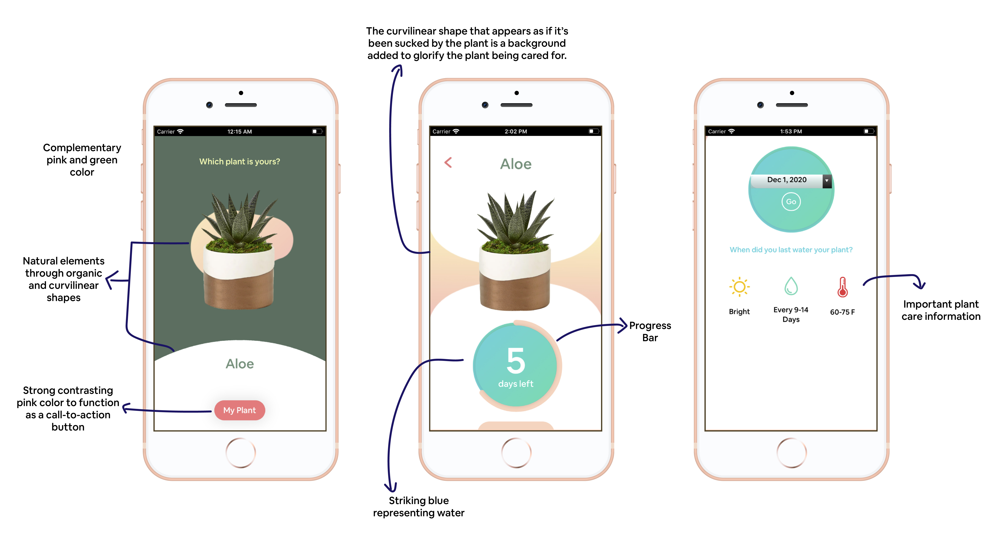
Mockup up preview of the finalized wireframes.
I also explored different arrangement of colors and different UI design.
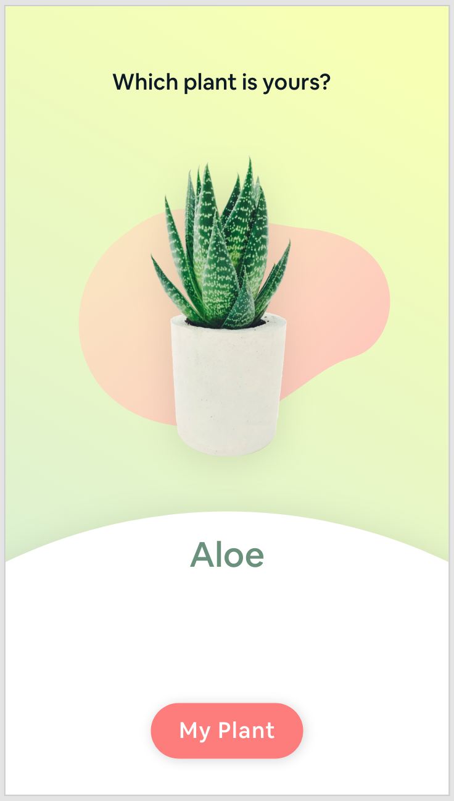
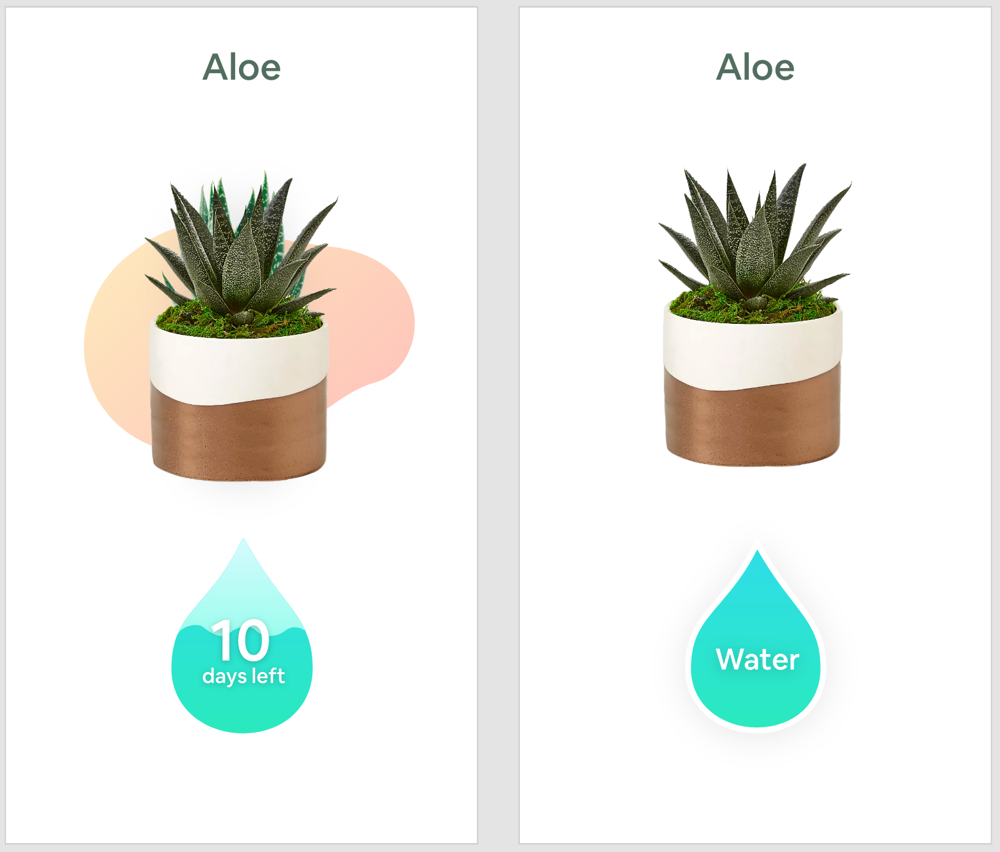
Exploration of UI designs
DEVELOPMENT
Add to Home Functionality
This functionality is important to guide user into “installing” the mobile web app to fully use it like an app outside of the browser. By doing this, user can access the web from their mobile home page.
I used a JS framework that has all the functionality to prompt user to add the app to their home page.
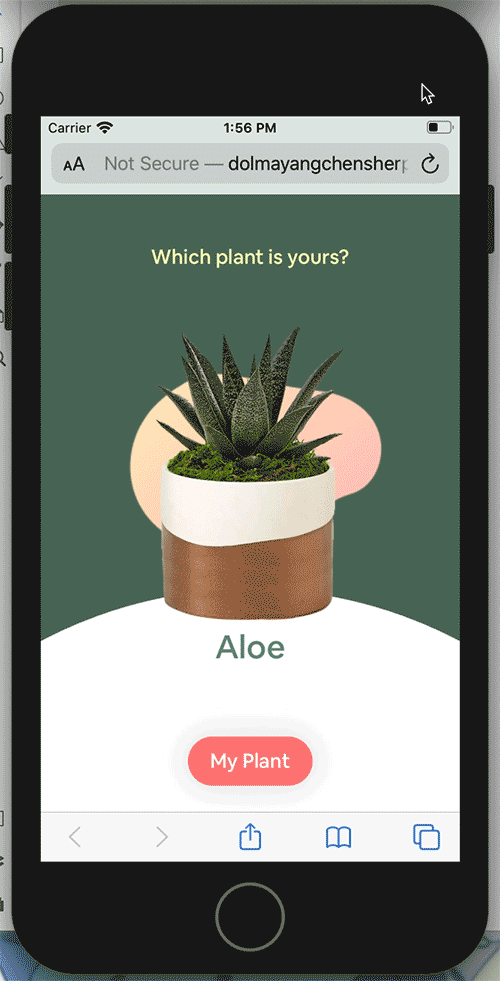
Add to Home functionality in action!
Local Storage
The local storage is needed to store the last date the plant was watered, and how many days left. To do this, there are three JavaScript functions required:
readData() : to see if there is any stored in the local storage
writeData() : to store new data in the local storage
removeData() : to remove all the data so new data can be stored
In local storage, the “key” is the name of the data stored, and “value” is the data stored.
Since we are storing two keys, one for date last watered and other for days left, the two keys are “dys_DateWatered” and “dys_daysLeft”.
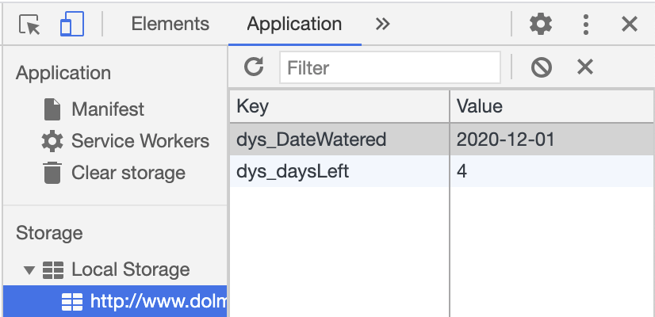
Screenshot of the local storage in inspector mode.
Upon clicking “Go”, the inputted date in the date form is stored as the value for the “dys_DateWatered” through the writeData() function.
localStorage.dys_DateWatered = dateInput.value;
At the same time, the days left to water the plant is calculated and stored as the value for the key “dys_daysLeft”.
localStorage.dys_daysLeft = daysLeft;
Cache
Application cache is needed so the app can be accessed offline just like native apps. The Application Cache file lets me specify which files should be cached and accessible offline. “cache-manifest” is a text file where I list all of the files and this file must be accessed in the tag :
< html manifest="cache.manifest" lang="en">
This is so that when a browser sees a manifest attribute, it downloads the manifest file and attempts to cache all the files listed. So if a user opens a locally stored web app offline, it uses the already cached files. When online, the browser reads the cache.manifest file and if updates have been made then it will download the entire cache again to save the updated changes.
Because the cache.manifest file has been downloaded, even if the browser is offline, it can still be accessed.
offline but can still be viewed on browser and on mobile home page
Progress Bar
This was a new challenge for me because I have never coded a functional progress bar, but it was an exciting take on.
Through my research, I found that the progress bar can be built by adding a element within an < svg > element and altering the circle’s stroke through the “strokeDashoffset” property.
altering the stroke dash offset in the inspector
The challenge was to figure out how to have the daysleft affect the progression of the progress bar. To do this, I created a function called “setProgress()”.
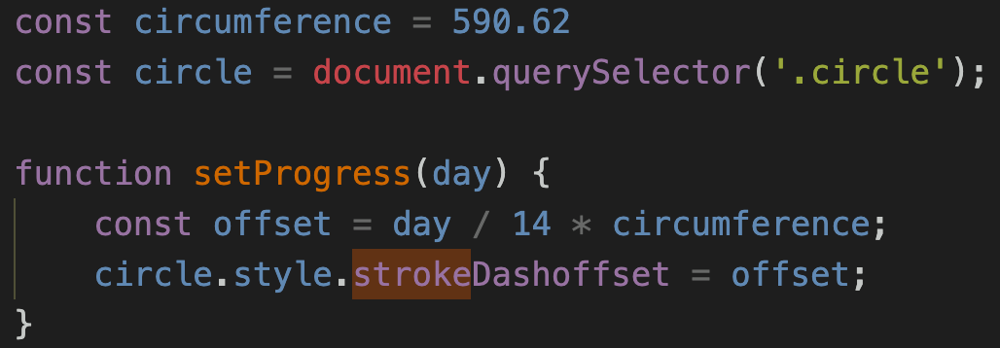
Javascript of the function setProgress()
The strokedashoffset defines the location along the svg path of the circle where the stroke begins. The higher the value of the strokedashoffset, the further along the path the stroke will begin. And if the value equals to the circumference of the circle, then it disappears. To calculate the value, I created a constant “offset” where I divide the days left with 14, where after every 14 days you should be watering your plant. Then I multiply this with the circumference of the circle which is 590.62. This value is then set to the strokeDashoffset property. The function is executed when the user clicks on “Go” and “Remove 1 Day” button.
After 14 days, a button appears which you click on after you watered your plant. Then the cycle and the progress bar restarts.
When the cycle is complete, the prompt button to water your plant appears.
DEBUGGING
Challenges Encountered
Calculating the Day Left
One of the challenge I encountered was calculating the days left till the next watered date..
At first I wrote on paper a possible equation to derive the days left from the watered date.
In the end I came up with something like this:
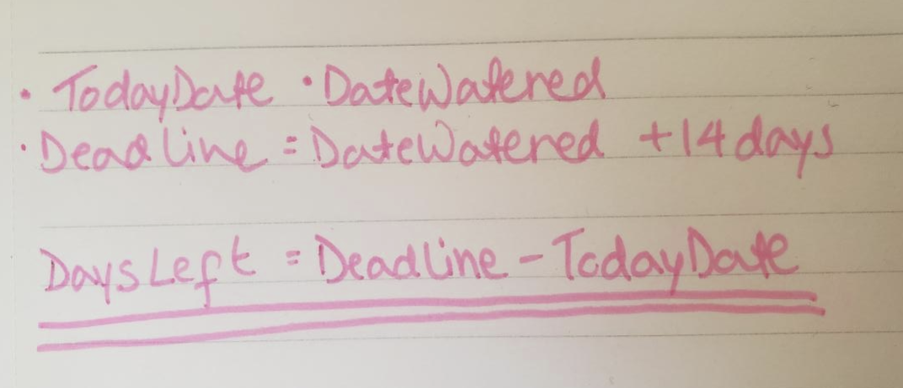
Writing down challenging issues helps me out best.
The issue is, I didn’t know that when you subtract the deadline from todayDate then it becomes milliseconds.
e.g. 426435311ms
Fortunately, all that was needed to convert ms to days was simple a calculation using an equation I found online.
e.g 4.9355938773148145 days
The value resulted in decimals so I round it to the nearest whole number, which finally is the days left.
e.g. 5 days left
Remove 1 Day Button
This button is added to so that when a day passes, user can manually change the days left by one day less. The issue is that when the user removes a day, exit out of the app and opens it again, the days left does not show the removed days left value.
I realized the issue is that this button does not update the value of the key “dys_daysLeft” in the local storage. To solve this, in the same function that removes the day left value, I added another line of code that stores the new days left value into the local storage. Now, everytime a day is taken off and the users exit and enters the app, that new value remains.
End Result
Check out my web app so far by clicking on the blob!
Overall, I managed to achieve my goal of developing the main functionality of the app: it is able to record the last date the plant was watered, it calculates and displays the days left till you the next water day, the progress bar also responds to changing days left, and the data of the date watered and days left can be stored in the local storage. Below the blue circle are additional necessary information to ensure the best care you can give to your plant for a healthy and speedy growth.
Conclusions
Yet another project that increased my coding capabilities; I have learnt how to animate a progress bar on CSS and how to make it dynamic through Javascript, I also learnt how to store inputted data into local storage, how to remove them, and how to read the local storage, and finally how to make the app function offline through application cache. For next steps, I want the days left to countdown by itself and integrate a reminder notification system telling user to water their plant, I also want to include the other succulent plant options other than aloe such as Echeverias, Jade Plant, and Zebra Plant. If possible, I would love to launch this as an official web app for anybody to use to help keep track of watering their plant!